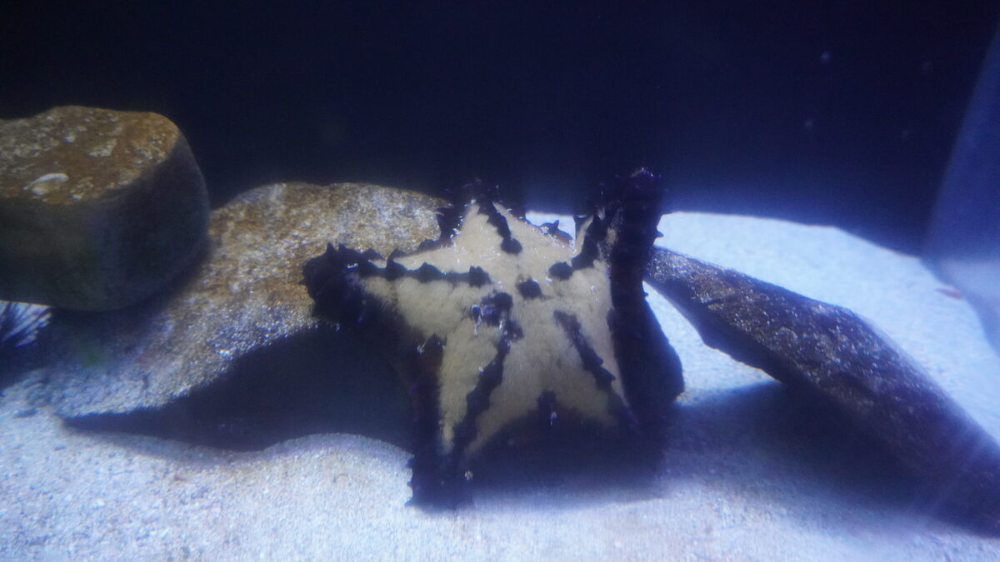

Den größten Kreis meines Lebens schließen
Juli 2016
An einem Freitag oder Samstag Ende Juli 2016 war ich, wie immer, auf einer Tech-Veranstaltung; diesmal in Antigua Guatemala, zu 3D-Druck und Unternehmertum. Einer meiner besten Freunde, Sebas, leitete den Workshop. Ich fuhr um 14 Uhr zurück, weil ich um 15 Uhr ein Fußballspiel hatte: 30 Minuten, um nach Hause zu kommen, Schuhe und Trikot zu holen und dann noch 15 Minuten zum Stadion zu laufen. Damals hatte ich ein „frijolito“ (eins dieser Handys, die nicht smart waren und nur zum Telefonieren taugten; ehrlich gesagt hätte ich gern wieder eins), also konnte man mich nur anrufen, und wenige hatten meine Nummer.
Ich stieg an der Haltestelle Santa Lucía aus dem Bus und ging zu dem Haus, in dem ich damals wohnte, etwa 500 Meter entfernt. Da hielt ein Auto an: der Onkel eines Cousins, ein Freund der Familie, einer von denen, die gern derbe Witze machten. Seine Frau und seine kleine Tochter saßen mit drin.
„Colocho, wohin gehst du?“
„Nach Hause, ich muss zum Spiel.“
Er sah mich überrascht an, und es entstand eine unangenehme Stille. Dann sagte er:
„Hör mal, dein Bruder ist im See ertrunken.“
Ohne zu verstehen, was er mir sagte, dachte ich: „Ahh, wieder einer seiner Witze.“ Wie immer glaube ich niemandem etwas HAHAHA. Ich sagte ihm, ich sei gerade erst zurückgekommen, niemand habe mich angerufen oder mir etwas gesagt, und ich würde hoch gehen und fragen.
„Ah, gut. Wenn was ist, ruf mich an, wir sind da.“
„Ja, danke.“
Ich ging beim Haus von dem vorbei, der laut mir einer meiner besten Freunde war HAHAHA (er sagt nein, aber da ich diese Geschichte erzähle, sage ich ja).
„JUAAAAAAAANJOOOOO!“, rief ich wie immer.
Er kam raus und ich sagte:
„Du, sie sagen, Hanz ist gestorben.“
„Ja, Mann. Sie haben mich gerade angerufen, ob ich was weiß. Sie sagten: ‚Wir wissen nicht, ob es stimmt, aber wir wissen, dass ihr euch sehr nahestandet, und anscheinend ist er im See gestorben.‘“
Wir standen beide ratlos da. Ich bat ihn mitzukommen, und wir gingen zum Haus meiner Großmutter. Es gibt dort einen sehr steilen Anstieg, und unterwegs blieben etwa drei Leute stehen, um mir ihr Beileid auszusprechen. Ich verstand immer noch nicht.
März 2017
Meine erste Reise nach Costa Rica war in der Woche des 14. März 2017, mit 300 gesparten Dollar: 140 gab ich für Tickets aus, den Rest hatte ich in Colones dabei. Zwei Tage vorher fragte ich einen Freund, den ich gerade kennengelernt hatte, weil wir beide bei Forbes erschienen waren:
„Mae, schau, kann ich bei dir übernachten?“
„Klar, komm.“
„Okay, ich bin in zwei Tagen da.“
Ich hatte schon alles gekauft und wusste in meinem Herzen, dass er Ja sagen würde.
Ich fuhr nach Costa Rica, um vor der Einsamkeit zu fliehen, vor der Traurigkeit, vor der Leere, die mein Bruder acht Monate zuvor hinterlassen hatte. Es war mein erster Flug, an den ich mich bewusst erinnere. Ich sah Carrizal, San José, La Sabana, das riesige Stadion in demselben Park, und nicht viel mehr. Mein Gepäck: ein paar T-Shirts, eine Hose, ein Heft, ein Kuli und ein paar Fotos.
Meinen 22. Geburtstag verbrachte ich in Costa Rica mit einer Familie, die mir fremd war, mich aber in diesen drei Tagen wie einen von ihnen behandelte. Wir kauften einen „queque“ (Kuchen, auf Costa-Ricanisch), und zum ersten Mal seit über acht Monaten vergaß ich, dass ich traurig war.
Das zweite Mal war im Juli, um beim ECSL (dem Zentralamerikanischen Treffen für Freie Software) an der Universität von Costa Rica einen Workshop zu geben. Das Schöne: Lexo, einer meiner besten Freunde, kam auch (später haben wir uns zerstritten HAHAHA). Ich holte ihn ab, wir hielten Vorträge, und es war großartig.
2026
Von da springe ich in dieses Jahr. Vor ein paar Monaten lebte ich in Xela und dachte daran, wie schwer es wäre, das Land wieder zu verlassen: wegen des Geldes, weil man sich verändert, weil Menschen sich verändern und die Pandemie ein großes Loch in unseren Herzen hinterlassen hat. Wir hatten mit Freunden aus ganz Zentralamerika gesprochen, aber nichts Konkretes zeichnete sich ab. Ich wollte, ich hatte den Wunsch, aber wie so oft fehlte mir die Überzeugung, es aus eigener Kraft zu tun, meinen Träumen nachzugehen und sie selbst zu lenken.
Im Februar kam eine Nachricht: „Schau, wir bauen einen Humanoiden für eine Firma.“ Und ich: „Ach nee HAHAHA, wie lästig, das ist ein Haufen Arbeit, ich will nicht.“ Der Trotz verflog und ich sagte zu. Der Humanoide kam im April, und wir hatten drei Tage, um ihn zusammenzubauen und auf einer Tech-Veranstaltung zu präsentieren. Wir schliefen drei Tage nicht, und dank Claude wurde ich in drei Tagen und drei Nächten zum KI-Experten. Auf dieser Veranstaltung wurden wir nach El Salvador eingeladen, um Hermes vorzustellen, und wir sagten: Warum nicht? Nach sieben Jahren wieder nach El Salvador zu fahren fühlte sich wie das erste Mal an, aber diesmal saß ich am Steuer: das erste Mal im Ausland gefahren, und das erste Mal so weit.
In diesen Monaten besuchte ich meine Mutter, und sie fragte:
„Und, bezahlen sie dich gut, wo du arbeitest?“
Wie erkläre ich ihr, dass ich Teilhaber bin und derjenige, der bezahlt? HAHAHA.
„Ja, ja, klar.“
Aber ich erklärte ihr, dass mir diese Arbeit einen entspannteren Lebensstil erlaubt: Ich arbeite kurze Zeit sehr viel und den Rest des Monats ruhiger, also kann ich mehr machen. Und so geht es mir gut, denn ich weiß: Wenn ich einmal so arbeite, wie ich arbeiten kann, höre ich nicht mehr auf. Also nutze ich die Zeit.
Im Juni redeten wir mit José und ein paar anderen Freunden, und José platzte heraus:
„Ich will mit dem Fahrrad nach Costa Rica.“
Und ich: „Ahh, krass, interessant.“ Im September machten wir wieder zusammen einen Hackathon, und die Idee wurde ernster, also sagte ich:
„Gut, los. Ich fahre mit dem Auto und passe auf dich auf.“
Gesagt, getan.
Im Oktober sagte ich meiner Vermieterin, dass ich in drei Tagen ausziehe und alles sauber hinterlasse. Am Donnerstag fing ich an zu packen, machte am Freitag weiter, und am Samstagmorgen luden wir schon alles in den Lastwagen und putzten, damit ich Xela offiziell verlassen konnte. Meine Sachen kamen zum Haus meiner Großmutter; ich fuhr um 15 Uhr los und kam um 19 Uhr an, nur um zu schlafen, die Kleidung für die Reise herauszusuchen und früh in die Hauptstadt und nach Antigua aufzubrechen. Da beginnt die Route dieses ganzen Blogs.
10. November: Puntarenas → San José
Und so kommen wir zu heute. Wir verließen Puntarenas Richtung San José, aber vorher besuchten wir den Parque Marino del Pacífico. Ja, den, der gestern geschlossen war HAHAHA. Heute war er offen, und ich bin so glücklich, wenn ich Tiere sehe. Hier ein paar Fotos:





José startete am Leuchtturmstrand und ... ratet mal, was passiert ist? HAHAHA. Da wir ihn immer vorausfahren lassen und weiter vorne auf ihn warten, wartete ich gegenüber dem UCR-Campus in Puntarenas, und zack: Warnung für niedrigen Reifendruck. Ich stieg aus, sah mir die Reifen an und dachte: „Ahh, die halten.“ Und sie hielten, noch etwa 10 km.
José beendete seine 20 km, wir luden das Rad ein, er stieg ins Auto, und zack: Der Reifen war komplett platt.
Wir zogen das Reserverad auf, und es stellte sich heraus, dass es auch platt war HAHAHA. Wir gingen von 80 km/h auf 5 runter und schlichen gaaanz langsam zu einem Ort, an dem angeblich Reifen gewechselt wurden, und nö: Es war eine Autowerkstatt, und sie haben uns nicht mal Luft aufgefüllt. Am Ende fanden wir eine Reifenwerkstatt; in Costa Rica heißen sie llanteras, in Nicaragua vulcanizadoras und in Guatemala pinchazos. ABEEEEEEER wir hatten kein Bargeld :)

Sie verlangten 2.700 Colones, und wer den Blog verfolgt, erinnert sich an die 4.000 Colones, die mir vom Geldautomaten an der Grenze übrig geblieben waren. Endlich hatten sie einen Zweck: Ich bezahlte den Reifen, und weiter ging's.
Wir fuhren über sehr schöne Straßen, solche, die man erwartet, wenn man nach Costa Rica kommt, und sahen interessante Dinge, wie die „presas“ (so nennt man hier Staus) und die Mautstellen: Die Straße hat zwei Spuren, dann kommt die Maut, sie öffnet sich auf zehn Spuren, nur zum Kassieren, und danach geht es wieder auf eine runter. Das fand ich so surreal HAHAHA.
Wir kamen bei Josés Freundin an, richteten uns ein und luden die Sachen aus. Wir wollten gerade essen, als ihr Freund sagte:
„Ich gehe zur Gemeinde, wollt ihr mit?“
Und ich, nach drei Stunden Fahrt:
„Klar, gehen wir HAHAHAHA.“
Ich landete in der Ratssitzung der Gemeinde Alajuelita HAHAHAHA.
Wir gingen zurück ins Haus, redeten bis etwa Mitternacht und schliefen gegen 1 Uhr ein. Am nächsten Morgen erzählten sie uns, dass, während ich schlief, DIE POLIZEI zum Haus kam, um zu sehen, wer wir waren und was wir dort machten HAHAHA. Josés Freunde klärten das, und mir blieb nur die Anekdote.
Nach San José zu kommen bedeutet mir viel, denn ich kam zehn Jahre später an. Weniger traurig, weniger jung. Ich bin nicht mehr der aufgeweckte Junge von früher, aber ich bin der Ingenieur, der Roboter entwirft. Ich bin nicht mehr der Junge, der Vorträge hält: Ich bin der, der Veranstaltungen organisiert und mehr Leute einlädt, sogar in anderen Ländern. Ich bin nicht mehr der Angsthase, der nicht wusste, was er tun sollte: Ich bin der Angsthase, der glaubt zu wissen, was er will, und der in Costa Rica unterwegs ist, um seinen Traum von einem multinationalen Unternehmen zu verwirklichen.
Der Tod meines Bruders tut nicht mehr so weh wie vor zehn Jahren. Weniger, aber er hört nie auf wehzutun: die Leere, die Einsamkeit, das Leben fühlt sich anders an. Diesmal komme ich nicht allein, sondern mit José, der meinem Bruder ein bisschen ähnelt, weil wir keine Filter haben und Risiken nicht abschätzen können. Aber er ähnelt auch mir, oder dem, der ich sein will, wenn ich groß bin.
José erinnert mich daran, dass man Dinge einfach um ihrer selbst willen tun muss. Wie vor zehn Jahren, als ich zu meinem Bruder sagte: „Alter, lass uns um 2 Uhr nachts auf dem Platz Fußball spielen, und wir machen gleich das Flutlicht an, dafür zahlt man ja Steuern.“ Und da zogen wir los, ein Haufen Idioten, um 2 Uhr nachts Fußball spielen, weil es ging, weil mein Dörfchen ein sicherer Ort war.
José ist nicht Hanz, José ist nicht Yeffri, José ist José. Aber er erinnert mich an das, was ich damals beiseitegelegt hatte.
Damit haben wir die Hinreise beendet, von Guatemala nach Costa Rica: 1.366 km in 17 Tagen. Diese Wochen werden kompliziert und sehr hektisch, aber hier sind wir, und Angst haben wir keine.
Danke, dass ihr bis hierher gelesen habt. Wenn ihr mich gelesen habt, sagt es mir gern, damit ich weiß, wer mich auf dieser ganzen Strecke begleitet hat. Hab euch lieb, und wir sehen uns am 25. in Guatemala.
👆 Tippe oder klicke auf einen Punkt der Karte, um das Kapitel dieses Tages zu lesen.